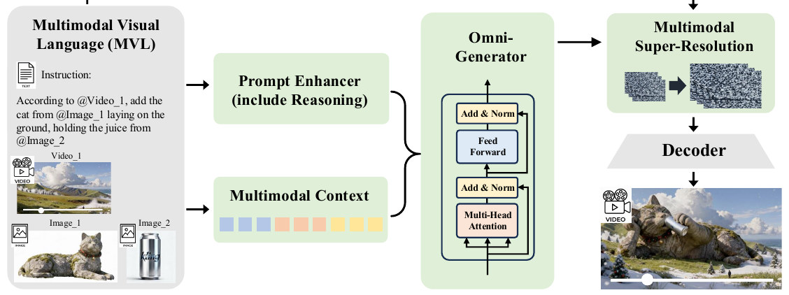
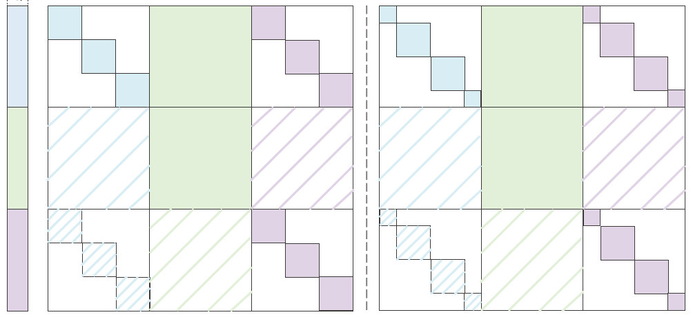
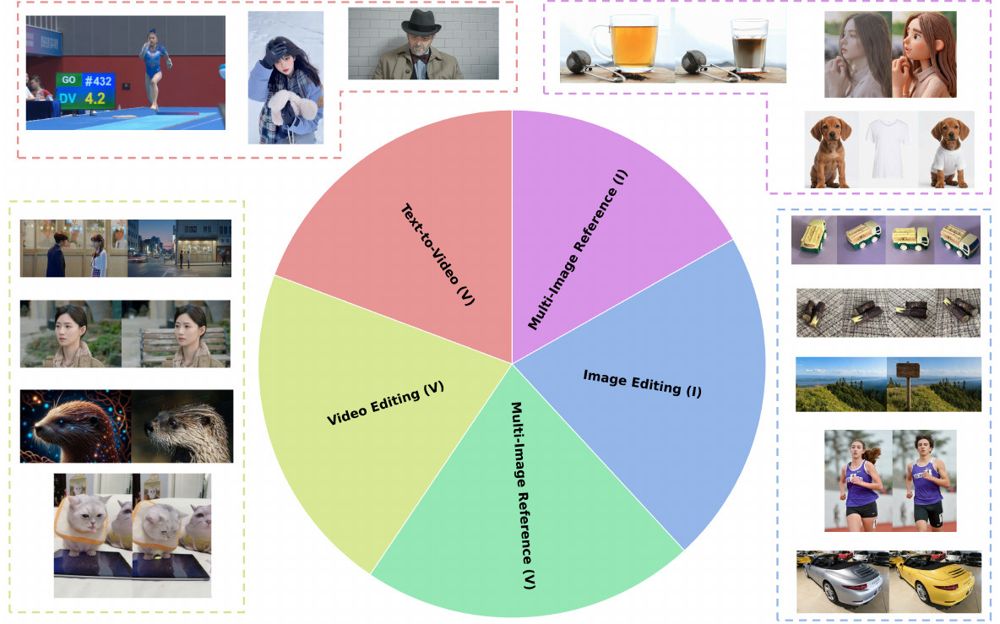
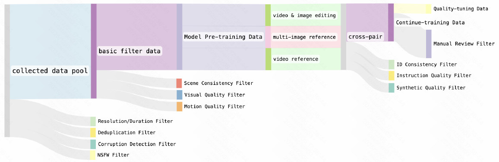
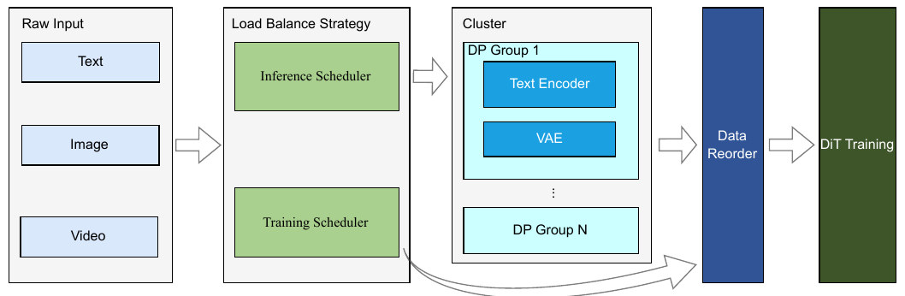
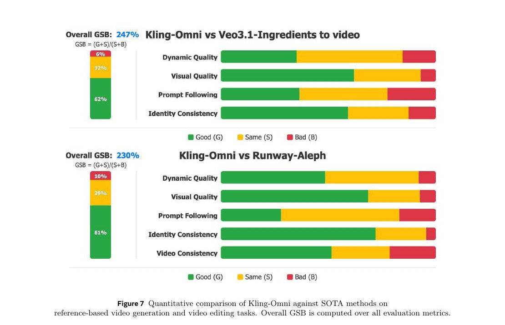

速览
五条要点
一个模型，指令里直接 @ 素材
MVL 以自然语言为骨架、嵌入图像 / 视频 / 主体库引用；同一模型覆盖参考生成、指令编辑、前后镜头、新机位、动作/运镜迁移、首尾帧等 23 项能力表 1，并能在一次生成里组合多条指令§4.2.4。
数据：挖掘 + 专家合成 + 三层过滤
用内部 embedding 模型挖掘语义相关 / 主体一致的跨模态样本；用内部图像编辑、视频理解模型合成编辑与多图参考数据；「自动反向合成」造参考生成视频样本§3.1。过滤分基础治理、时序质量、跨模态对齐三层§3.2。规模与配比全未披露。
训练：渐进五段
T2V + I2V 预训练 → 交错多模态 continue-training → 高质量 quality-tuning → 人工偏好对 DPO（多轮）→ 两段蒸馏到 10 NFE§2.2。不用 GRPO，理由是省掉轨迹采样§2.2.3。超参一个都没给。
PE 和超分也是正式组件
Prompt Enhancer 先 SFT 学推理链、再 RL，奖励含「改写后 prompt 与高质量训练数据的相似度」§2.3；超分用局部窗口 + 奇数层移窗 + 非对称注意力，条件 token 的 KV 跨采样步复用§2.4。
评测只有内部人评
OmniVideo-1.0（500+ case）双盲 GSB，每项只比一个对手；GSB 定义为 (G+S)/(S+B)图 7，与常见口径不同。没有公开基准分数、没有消融。
架构：PE + Omni-Generator + 多模态超分
原文没有和前代可灵模型做结构对比，也没给 DiT 配置；能比的只有它对「同类做法」的批评：静态文本编码器、任务专用管线或外挂 adapter§1。

MVL：多模态视觉语言 §1 · §2.1
自然语言当「语义骨架」，图像、视频、主体库作为指令里可引用的词。主体库可放同一主体的多视角 / 姿态 / 表情 / 光照图，用于稳住身份§4.2.1。
Prompt Enhancer（PE） §2.3
基于 MLLM，作用是把多样的用户输入映射到与训练数据一致的分布，并借文本推理补物理合理性。训练：专门构建的多语言数据集，先 SFT（推理链）再 RL。
作者称 PE「显著」提升动态与细节——无数字
Omni-Generator §2.1 · §5
视觉与文本 token 在共享 embedding 空间里处理；图 1 画的是标准 Multi-Head Attention + FFN + Add&Norm 块。层数、宽度、注意力形式（单流/双流）、文本编码器、VAE 原文未披露。
Multimodal Super-Resolution §2.4 · 图 2
级联扩散 VSR，条件 = 基座输出的低分辨率 latent + 原始 MVL 信号；沿用基座结构并用其预训练权重初始化。
- 全注意力换成局部窗口注意力；奇数层把窗口平移半个窗口，打通相邻窗口。
- 非对称注意力：条件 token（作 query）只做自注意力，噪声 token 看全序列 → 条件 token 的 KV 可缓存、跨采样步复用。
- 作者称对画质影响「可忽略」——无数字

数据系统
§3 是全文对数据最集中的描述：两个维度（跨模态 × 跨任务）、两条来源（真实采集 × 合成）、三层处理。没有任何规模、比例或阈值数字。

真实数据采集 §3.1
- 精选视频与图像集合，覆盖多主体、复杂场景、风格变化，提供「自然先验」。
- 互联网大规模挖掘管线：用内部 embedding 模型找出语义相关或主体一致的跨模态样本，拼成参考类训练样本。
合成数据构建 §3.1
- 理由：只靠真实数据学不到精确可控性。
- 专家模型驱动：内部图像编辑模型与视频理解模型生成编辑、多图参考样本。
- 自动反向合成（reverse synthesis）：构造参考生成视频样本，保留自然视频的时序一致性，同时给出显式控制信号。具体怎么「反向」原文未披露。
三层处理 §3.2
各打分模型、阈值、剔除率 原文未披露。

图 6 读出的「数据层级 ↔ 训练阶段」对应 图 6 · §2.2
「cross-pair」在正文中未解释；按图位置看是把预训练数据配成跨模态 / 跨任务样本对的步骤。图 6 里没有单独画 T2V 分支。
Caption / 指令标注：原文写到的全部 §2.2–2.3 · §3.2
- 预训练 caption 从简短 prompt 到长篇叙述都有，为适配多样指令格式§2.2.1。
- quality-tuning 集：任务分布均衡，每个样本配「精确的指令标注」§2.2.2。
- 对齐层检查 caption 与画面一致、编辑指令与执行结果一致§3.2。
- PE 的目标分布 = 训练数据的 caption 分布；RL 奖励直接含「与高质量训练数据相似度」§2.3。
captioner 是谁、caption 格式 / 长度分布、是否人工标注 原文未披露。
数据加载侧的工程 §2.5
- VAE / 文本编码器在线推理，与 DiT 训练分两段；中心调度器按负载把样本分给 DP 组§2.5.1 · 图 3。
- 洗牌带来的随机读改为预洗牌 Parquet 顺序读§2.5.3。
- 序列压平成 1D、最小 padding，变长打包§2.5.2。
| 项目 | 原文给出的信息 | 来源 |
|---|---|---|
| 视频 / 图像总量 | 原文未披露 | §3.1 |
| 各任务配比（T2V / 编辑 / 多图参考 …） | 原文未披露（图 5 饼图无数值） | 图 5 |
| 合成 vs 真实比例 | 原文未披露 | §3.1 |
| 过滤阈值 / 剔除率 | 原文未披露（图 6 支流无数值） | §3.2 · 图 6 |
| quality-tuning 集规模 | 原文未披露，仅说「任务分布均衡」 | §2.2.2 |
| DPO 偏好对数量 / 轮数 | 原文未披露，仅说「多轮」 | §2.2.3 |
| PE 训练集 | 专门构建的多语言数据集；规模 原文未披露 | §2.3 |
| 评测集 | OmniVideo-1.0：500+ case | §4.1.1 |
训练配方
学习率、batch、步数、分辨率、时长、GPU 数量 原文未披露。下面只列阶段目标与数据。
Omni-Generator 主线 §2.2
预训练
大规模文本-视频对，学指令式 T2V；caption 长短兼有；混入 I2V 任务，提早建立图文协同。
Continue-training
对齐复杂 MVL：参考生成视频、图像/视频编辑、语义理解类任务，图像-视频-文本高度交错。
Quality-tuning
任务均衡、视频标准高的精选集，配精确指令标注；迭代微调收窄输出分布。
DPO
目标：运动动态、画面完整性。同一 MVL 条件换随机噪声生成多条 → 人工选优劣对 → 带对应噪声和 timestep 算 DPO loss；多轮。
两段蒸馏
① 轨迹匹配（PCM / HyperSD 思路），分段 timestep，直接用 10 步目标调度；② 分布匹配（TDM 思路，少步 ODE），保留轨迹项作正则。150 → 10 NFE。
旁路组件
Prompt Enhancer
MLLM 底座 → SFT（学推理链）→ RL，奖励：事实正确、内容丰富、语义合理、与高质量训练数据相似§2.3。
多模态超分
沿用基座结构、用基座预训练权重初始化；条件是 LR latent + MVL 信号§2.4。训练数据与步数 原文未披露。
为什么是 DPO 不是 GRPO §2.2.3
原文理由只有一条：GRPO 需要昂贵的轨迹采样，DPO 是「一步扩散前向」。没有 DPO 前后的数字对比。
蒸馏的两个非常规选择 §2.2.4
- 第一段不经过「中间步数」过渡，直接蒸到 10 步目标调度。
- 第二段不用 DMD / SiD 的 SDE 形式，按 TDM 蒸成少步 ODE，称「经验上更适合我们的任务」；同时保留轨迹匹配损失防漂移（类似做法见 [3]）。

训练与推理系统细节 §2.5–2.6
| 方向 | 做法 | 来源 |
|---|---|---|
| 负载均衡 | 启发式调度减少 PP / DP 气泡；VAE / TE 推理的 token 按 PP stage 动态切分 | §2.5.1 |
| 变长序列 | microbatch 级弹性 Ulysses 并行度切换（参考 FlexSP [32]）；CPU 上的在线调度器预先决定每个 microbatch 的 UP 度 | §2.5.1 · 图 4 |
| 通信 | 两级 all-to-all：节点内聚合 → 节点间交换，减轻 spine 交换机压力 | §2.5.1 |
| 算子 | 打包版多模态 FlashAttention（MM-FlashAttention），单 kernel 支持任意跨模态 mask + 变长序列 | §2.5.2 |
| 显存 | 选择性重算；流水线感知的 offload / onload；虚拟流水线 stage 感知的激活复用（多视图、多流场景） | §2.5.2 |
| 可靠性 | 有效训练时间比 97%；RDMA 流量监控 1 分钟内发现 hang；自研 TCP 同步层 + NVMe 并发加载实现亚分钟重启；异步 checkpoint | §2.5.3 |
| 推理并行 | Ulysses + 张量并行，计算-通信重叠 | §2.6 |
| 量化 | 大部分 GEMM 与自注意力 FP8；量化/反量化算子全融合；FP8 通信。称「近乎无损」，无数字 | §2.6 |
| 缓存 | 为长条件输入设计的 cache，约 2× 加速；配套 cache-offload 缓解显存 | §2.6 |
图 4（流水线调度：交错 1F1B、offload/onload、UP2/UP4 切换）未随本页裁图提供。
评测：OmniVideo-1.0 人评 GSB
全文唯一的定量结果是图 7 的两组 GSB。没有 VBench 等公开基准，也没有和前代可灵的对比。
OmniVideo-1.0 基准 §4.1.1
- 规模
- 500+ case，基于内部收集的图像、主体、视频素材
- 主体类别
- 人物、卡通角色、动物、服装、道具
- 应用场景
- 专业视频制作、电商广告、社媒内容
- 附加难点
- 复杂动作、广角视角、情绪表达、跨风格融合、多元素融合
评价维度 §4.1.2 · 图 7
- Dynamic Quality
- 帧间连续、属性稳定、运动物理合理、幅度、多人交互与叙事运镜
- Prompt Following
- 语义与约束的执行准确度
- Identity Consistency
- 参考主体在机位、表情、动作、光照变化下的身份与结构
- Video Consistency
- 仅编辑任务：未编辑区域的保真
- Visual Quality
- 图 7 有此维度，§4.1.2 未定义
| 对比 | 任务 | G | S | B | Overall GSB | G − B |
|---|---|---|---|---|---|---|
| Kling-Omni vs Veo 3.1 | 图像参考生成（Ingredients to video） | 62% | 32% | 6% | 247% 图 7 | +56 pt 推算 |
| Kling-Omni vs Runway-Aleph | 视频编辑 | 61% | 29% | 10% | 230% 图 7 | +51 pt 推算 |
口径：图 7 标注 GSB = (G+S)/(S+B)，S 同时进分子分母，与常见的 (G−B)/(G+S+B) 不同，不能和其他报告的 GSB 直接比。按图中整数复算：(62+32)/(32+6) ≈ 247%，(61+29)/(29+10) ≈ 231% 推算，后者与图中 230% 差 1 pt，应是百分比取整所致。分维度条（Dynamic / Visual / Prompt / Identity / Video Consistency）没有数值标注；目测两组里 Prompt Following 的 G 段都偏短、对 Veo 3.1 的 B 段最长，Runway-Aleph 组更明显——仅作定性参考。
评测方式：双盲并排比较，评审为领域专家与专业标注员§4.1.3；每组样本数、评审人数、一致性 原文未披露。
表 1 能力对照（厂商自填 ✓/✗） 表 1 · 23 项
Kling-Omni 23/23，Veo 3.1 8/23，Runway Aleph 14/23 推算。这是功能清单，不是效果分。末两行带 ✓ 的能力对应 §4.3，而 §4.3 标题的 ∗ 脚注写明「该节功能尚未在线上版本支持」，且该节用的是「更强的视觉-语言推理引擎」。原表「Visuao」为原文拼写错误。
| 类别 | 能力 | Kling-Omni | Veo 3.1 | Runway Aleph |
|---|---|---|---|---|
| 图像 / 主体库参考 | Image Reference | ✓ | ✓ | ✗ |
| Element Library Reference | ✓ | ✗ | ✗ | |
| Image + Element Library Ref. | ✓ | ✗ | ✗ | |
| 指令编辑 | Addition | ✓ | ✓ | ✓ |
| Removal | ✓ | ✓ | ✓ | |
| Replacement | ✓ | ✗ | ✓ | |
| Stylization | ✓ | ✗ | ✓ | |
| Attribute Manipulation | ✓ | ✗ | ✓ | |
| Special Effects | ✓ | ✗ | ✓ | |
| Video Matting | ✓ | ✗ | ✓ | |
| Multi-image Editing | ✓ | ✗ | ✗ | |
| Subject-driven Editing | ✓ | ✗ | ✗ | |
| 视频参考 | Next Shot Generation | ✓ | ✗ | ✓ |
| Prev. Shot Generation | ✓ | ✗ | ✓ | |
| New Camera Angle Generation | ✓ | ✗ | ✓ | |
| Motion Transfer | ✓ | ✗ | ✗ | |
| Camera Motion Transfer | ✓ | ✗ | ✗ | |
| 帧条件生成 | First Frame to Video | ✓ | ✓ | ✓ |
| First & Last Frame | ✓ | ✓ | ✓ | |
| Text-to-Video | ✓ | ✓ | ✓ | |
| Compositional Generation | ✓ | ✗ | ✓ | |
| Visual Prompt Understanding（原表作 Visuao） | ✓ | ✓ | ✗ | |
| Reasoning-enhanced Generation | ✓ | ✓ | ✗ | |
定性展示（图 8–28）都在演示什么 §4.2–4.3
- 多模态参考：7 张参考图组合（图 8）、主体库多表情（图 9）、图 + 主体库（图 10）、新机位 / 动作迁移（图 11）、运镜迁移（图 12）、前后镜头（图 13）、草图与色彩参考（图 14）。
- 时序叙事：多宫格分镜图 → 连续视频（图 15–16）。
- 交互编辑：增删换（图 17）、带参考图增 / 换（图 18）、背景替换（图 19）、风格化（图 20）、状态 / 材质（图 21）、特效（图 22）、天气（图 23）。
- 任务组合：主体库 + 参考图 + 风格化（图 24）；新机位 + 添加、换背景 + 添加 + 黏土风（图 25）。
- ∗ 尚未上线的探索：箭头 / 框等视觉信号控制（图 26）、GPS 坐标与「6 小时后」的世界知识推理（图 27）、按面数排序与成语填字（图 28）§4.3。
新在哪
DPO、FP8 量化、Ulysses / 张量并行、选择性重算、局部窗口注意力本身都是已有做法，不算在内。
MVL：把图像 / 视频 / 主体库变成指令里可引用的词
一条指令里用 @Image_k、@Video_k、@Girl 这类槽位混合引用，主体库允许同一主体多图；生成、编辑、视频参考共用这一接口。
可核对：§1、§2.1、§4.2.1、图 1 / 8–10。没有「单图参考 vs 主体库」的定量对比。
同一生成器覆盖编辑 + 视频参考 + 组合任务
continue-training 阶段把参考生成、图像/视频编辑、语义理解任务以交错格式混训；声称组合指令可一次完成、避免串行编辑的误差累积。
可核对：§2.2.2、§4.2.4、表 1、图 24–25。「避免误差累积」无数字。
以 MVL 为条件的超分 + 非对称注意力
超分不只吃 LR latent，还吃原始参考图 / 视频；条件 token 只自注意、噪声 token 看全序列，使条件 KV 可跨步缓存。
可核对：§2.4、图 2。无速度 / 画质数字。
蒸馏直奔 10 步 + ODE 分布匹配带轨迹正则
第一段跳过中间步数过渡；第二段按 TDM 做少步 ODE 而非 DMD / SiD 的 SDE，保留轨迹匹配项作正则。
可核对：§2.2.4。方法组件来自 PCM / HyperSD / TDM / [3]，组合与选择是本文的；无蒸馏前后指标。
对图像编辑数据 / 评测 / caption 的启示
每条先写论文怎么做（带出处），再写一条可迁移做法。「迁移」都是本页的建议，不是论文内容。
C1caption 长短混训
论文：预训练 caption 从简短 prompt 到长篇叙述都有，为适配多样指令格式§2.2.1。
迁移建议，不是论文内容：每个编辑对至少配「一句话口语指令 / 带对象与属性的标准指令 / 完整差异描述」三档，训练时按比例采样；评测按三档分桶报分，看短指令桶是否掉得最多。
C2让推理期改写对齐训练 caption 分布
论文：PE 的目标是把用户输入映射到训练数据分布；RL 奖励显式含「与高质量训练数据的相似度」§2.3。
迁移建议，不是论文内容：编辑模型上线的指令改写器，用训练集指令做参照分布（embedding 距离或长度 / 句式统计）当奖励或筛选信号；并定期抽线上真实指令，量它和训练指令分布的距离。
C3多图编辑用显式槽位
论文：指令用 @Image_1 等槽位指明每张参考图的角色，如「@Image_1 wearing @Image_3, holding @Image_4」图 1 · 图 8。
迁移建议，不是论文内容：多参考图编辑数据的指令统一用槽位语法，并做自动 QC：指令里出现的每个槽位都必须在目标图里可检出对应元素，未被引用的参考图不进样本。
D1反向合成，让目标端保持「真」
论文：用「自动反向合成」构造参考生成样本，保留自然视频的时序一致性并给出显式控制信号§3.1（具体做法未披露）。
迁移建议，不是论文内容：增加 / 替换类编辑对优先由真实照片当目标、用移除或改写模型造源图，指令取逆向操作；这样模型学到的输出端是真实分布，合成伪影只留在输入端。
D2用 embedding 挖主体一致样本
论文：内部 embedding 模型从互联网数据中挖「语义相关 / 主体一致」的跨模态样本§3.1；主体库用同一主体多视角多表情图§4.2.1。
迁移建议，不是论文内容：主体驱动编辑（换衣、加道具、人物 ID 保持）用视频帧或同主体图集挖成对数据，并为每个主体留 3–5 张不同姿态参考图，构成可直接用于训练和评测的「主体库」。
D3指令↔执行一致性单独过一层
论文：对齐层校验编辑指令与执行结果；人像任务额外做严格身份一致性检查§3.2；cross-pair 后有 ID 一致性、指令质量、合成质量三道过滤图 6。
迁移建议，不是论文内容：编辑数据 QC 拆成三个独立打分器（指令是否被执行 / 人脸 ID 是否保持 / 合成伪影），分开记分、分开设阈值，方便事后定位是哪一项把样本卡掉的。
D4数据漏斗与训练阶段一一对应
论文：预训练数据 → 经 cross-pair 与三道过滤成为 continue-training 数据 → 人工审核后成为 quality-tuning 数据图 6 · §2.2。
迁移建议，不是论文内容：编辑数据按「自动过滤即可进持续预训练 / 多模型交叉通过进 SFT / 人工审核过才进最终质量微调」分档存储，人工预算只花在最后一档。
D5过滤「没什么变化」的样本
论文：过滤「动作语义密度」过低的视频，提高动态内容的有效训练比例§3.2。
迁移建议，不是论文内容：编辑对的对应物是「几乎没改」的样本：按编辑区域面积、像素 / 感知差异下限剔除近似 no-op 的编辑对，但保留指令本就要求细微改动的类别（如去痣、调色）并单独设阈值。
E1「未编辑区域保真」单列一维
论文：编辑任务单独设 Video Consistency，评未编辑区域的保真，与 Prompt Following 分开§4.1.2。
迁移建议，不是论文内容：图像编辑人评至少拆成「指令执行」与「非编辑区保持」两维分别打分，避免什么都没改的输出在单一总分里拿到中等分。
E2GSB 报原始 G/S/B 和公式
论文：图 7 同时给 G/S/B 占比与公式 (G+S)/(S+B)图 7。
迁移建议，不是论文内容：内部 GSB 永远同时报 G、S、B 三个占比和样本数；比率型指标在 S 很大时会掩盖 G 与 B 的差异，汇报里加一列 G−B。
E3评测集三轴打标
论文：OmniVideo-1.0 按主体类别 × 应用场景 × 附加难点构建§4.1.1。
迁移建议，不是论文内容：编辑评测集每条打「主体类别 / 业务场景 / 难点」三个标签，报总分同时报各桶分，新版本回归时先看是哪一桶掉分。
E4同条件多噪声采样做偏好对
论文：同一 MVL 条件用不同随机噪声生成多条视频，人工选优劣对，DPO 时连同噪声与 timestep 一起用§2.2.3。
迁移建议，不是论文内容：编辑偏好数据按（源图, 指令）固定条件、只换 seed 采样 N 张，人工两两比较；保存 seed 以便复现，并把偏好标注维度限定在可判断的少数几项（如执行度、保持度）。

局限与存疑
- 没有任何消融或分模块数字。PE「显著提升」、超分「影响可忽略」、FP8「近乎无损」、DPO「显著改善」、蒸馏「保持保真度」都只是文字结论§2.2–2.6。
- 数据规模、配比、阈值全未披露。图 5 饼图与图 6 桑基图都无数值；合成与真实数据的比例、反向合成的具体流程也没写§3。
- 评测只有内部人评，且对手各一个。OmniVideo-1.0 未公开；参考生成只比 Veo 3.1（Ingredients to video），编辑只比 Runway-Aleph；样本数、评审人数、一致性未给§4.1 · 图 7。
- GSB 口径非常规。(G+S)/(S+B) 把 S 计入分子分母，247% / 230% 不能与其他报告的 GSB 横比；按图中整数复算第二组约 231% 推算，与标注 230% 有 1 pt 取整差。
- 图文不一致。图 7 含 Visual Quality 维度，§4.1.2 只定义了 Dynamic Quality、Prompt Following、Identity Consistency、Video Consistency；基准名在 §4.1.1 写作「OmniVideo-1.0 Benchmark」，§4.1.3 写作「OmniVideo-Benchmark 1.0」。
- 表 1 的 ✓ 含未上线能力。Visual Prompt Understanding、Reasoning-enhanced Generation 打了 ✓，但对应的 §4.3 脚注写明尚未在线上版本支持，且用的是「更强的视觉-语言推理引擎」§4.3∗。表 1 是厂商自填功能清单。
- 架构关键配置缺失。参数量、层数、注意力形式、文本编码器、VAE、输出分辨率 / 时长 / 帧率都没写；也没说明与前代可灵模型的关系。
- 不可复现。无权重、无代码、无许可证说明，只有在线访问入口摘要页。
图表索引
| 编号 | 内容 | 本页 |
|---|---|---|
| 图 1 | Kling-Omni 总览（MVL → PE / 多模态上下文 → Omni-Generator → 超分 → 解码） | 03 架构 |
| 图 2 | 多模态超分的注意力掩码（偶数层 / 奇数层移窗） | 03 架构 |
| 图 3 | 在线训练数据管线（推理调度器 / 训练调度器） | 05 训练 |
| 图 4 | 流水线调度：交错 1F1B、offload / onload、弹性 Ulysses | 未裁图（文字见 05 折叠表） |
| 图 5 | 跨模态跨任务数据分布（五类，无数值） | 04 数据 |
| 图 6 | 数据过滤桑基图（预训练 → continue-training → quality-tuning） | 04 数据 |
| 图 7 | GSB：vs Veo 3.1、vs Runway-Aleph | 未裁图（数字与重绘见 06） |
| 图 8–14 | 多模态参考：多图、主体库、新机位、动作 / 运镜迁移、前后镜头、草图参考 | 未裁图（列表见 06） |
| 图 15–16 | 时序叙事：多宫格分镜 → 视频 | 未裁图 |
| 图 17–23 | 视频编辑：增删换、参考图引导、背景、风格化、属性、特效、天气 | 未裁图 |
| 图 24–25 | 任务组合 | 未裁图 |
| 图 26–28 | ∗ 探索功能：视觉信号控制、世界知识推理、逻辑推理 | 未裁图 |
| 表 1 | 与 Veo 3.1、Runway Aleph 的能力对照 | 06 折叠表 |